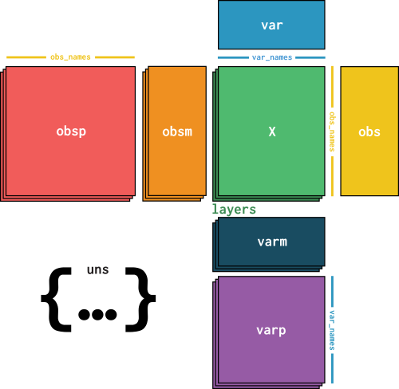

导入模块
import numpy as np
import pandas as pd
import matplotlib.pyplot as plt
import seaborn as sns
import pooch
import anndata
import scanpy as sc
数据下载与导入
下载并导入.h5ad文件：已经预处理的 PBMC 数据集
scverse-getting-started-anndata-pbmc3k_processed.h5ad
datapath = "./data/scverse-getting-started-anndata-pbmc3k_processed.h5ad"
adata = anndata.read_h5ad(datapath)
"""
AnnData object with n_obs × n_vars = 2638 × 11505
obs: 'n_genes', 'percent_mito', 'n_counts', 'louvain_cell_types'
var: 'gene_names', 'n_cells', 'gene_ids'
uns: 'louvain', 'louvain_colors', 'pca'
obsm: 'X_pca', 'X_tsne', 'X_umap'
layers: 'raw'
obsp: 'distances_all'
"""
adata_df = adata.to_df()
"""
gene_names LINC00115 NOC2L KLHL17 PLEKHN1 HES4 ISG15 AGRN ... MT-CO3 MT-ND3 MT-ND4L MT-ND4 MT-ND5 MT-ND6 MT-CYB
cell_barcode ...
AAACATACAACCAC-1 0.0 0.0 0.0 0.0 0.0 0.000000 0.0 ... 1.718197 0.649662 0.000000 2.317369 0.649662 0.0 1.538924
AAACATTGAGCTAC-1 0.0 0.0 0.0 0.0 0.0 0.000000 0.0 ... 2.049184 0.642665 0.000000 2.764773 0.372095 0.0 1.527396
AAACATTGATCAGC-1 0.0 0.0 0.0 0.0 0.0 0.532456 0.0 ... 1.338269 0.000000 0.000000 1.134407 0.878057 0.0 1.338269
AAACCGTGCTTCCG-1 0.0 0.0 0.0 0.0 0.0 2.144639 0.0 ... 1.470325 0.000000 0.608494 1.256467 0.984071 0.0 0.984071
AAACCGTGTATGCG-1 0.0 0.0 0.0 0.0 0.0 0.000000 0.0 ... 1.179840 0.000000 0.000000 0.000000 1.706149 0.0 1.179840
... ... ... ... ... ... ... ... ... ... ... ... ... ... ... ...
TTTCGAACTCTCAT-1 0.0 0.0 0.0 0.0 0.0 2.298200 0.0 ... 1.811211 0.494533 0.000000 0.494533 0.000000 0.0 0.494533
TTTCTACTGAGGCA-1 0.0 0.0 0.0 0.0 0.0 0.496017 0.0 ... 1.703869 0.000000 0.496017 0.826074 0.496017 0.0 1.272192
TTTCTACTTCCTCG-1 0.0 0.0 0.0 0.0 0.0 0.000000 0.0 ... 2.320006 0.000000 0.000000 2.320006 0.000000 0.0 1.831505
TTTGCATGAGAGGC-1 0.0 0.0 0.0 0.0 0.0 0.000000 0.0 ... 1.670896 0.000000 1.150086 0.000000 0.000000 0.0 1.150086
TTTGCATGCCTCAC-1 0.0 0.0 0.0 0.0 0.0 0.000000 0.0 ... 0.750617 0.000000 0.000000 0.750617 0.000000 0.0 1.471306
[2638 rows x 11505 columns]
"""
adata_shape = adata.shape
"""
(2638, 11505)
"""
adata_nobs = adata.n_obs # 细胞数量
"""
2638
"""
adata_obs_names = adata.obs_names # 细胞条码
"""
Index(['AAACATACAACCAC-1', 'AAACATTGAGCTAC-1', 'AAACATTGATCAGC-1',
'AAACCGTGCTTCCG-1', 'AAACCGTGTATGCG-1', 'AAACGCACTGGTAC-1',
'AAACGCTGACCAGT-1', 'AAACGCTGGTTCTT-1', 'AAACGCTGTAGCCA-1',
'AAACGCTGTTTCTG-1',
...
'TTTCAGTGTCACGA-1', 'TTTCAGTGTCTATC-1', 'TTTCAGTGTGCAGT-1',
'TTTCCAGAGGTGAG-1', 'TTTCGAACACCTGA-1', 'TTTCGAACTCTCAT-1',
'TTTCTACTGAGGCA-1', 'TTTCTACTTCCTCG-1', 'TTTGCATGAGAGGC-1',
'TTTGCATGCCTCAC-1'],
dtype='object', name='cell_barcode', length=2638)
"""
adata_obs_colums = adata.obs_keys() # 细胞信息列名
"""
['n_genes', 'percent_mito', 'n_counts', 'louvain_cell_types']
"""
adata_nvars = adata.n_vars # 基因数量
"""
11505
"""
adata_var_names = adata.var_names # 基因名称
"""
Index(['LINC00115', 'NOC2L', 'KLHL17', 'PLEKHN1', 'HES4', 'ISG15', 'AGRN',
'C1orf159', 'TNFRSF18', 'TNFRSF4',
...
'MT-CO2', 'MT-ATP8', 'MT-ATP6', 'MT-CO3', 'MT-ND3', 'MT-ND4L', 'MT-ND4',
'MT-ND5', 'MT-ND6', 'MT-CYB'],
dtype='object', name='gene_names', length=11505)
"""
adata_var_colums = adata.var_keys() # 基因信息列名
"""
['gene_names', 'n_cells', 'gene_ids']
"""
adata1 = adata[0:100, ["MT-CO3", "MT-CYB"]] # 索引类似于pandas
"""
View of AnnData object with n_obs × n_vars = 100 × 2
obs: 'n_genes', 'percent_mito', 'n_counts', 'louvain_cell_types'
var: 'gene_names', 'n_cells', 'gene_ids'
uns: 'louvain', 'louvain_colors', 'pca'
obsm: 'X_pca', 'X_tsne', 'X_umap'
layers: 'raw'
obsp: 'distances_all'
"""
adata1_df = adata1.to_df()
"""
gene_names MT-CO3 MT-CYB
cell_barcode
AAACATACAACCAC-1 1.718197 1.538924
AAACATTGAGCTAC-1 2.049184 1.527396
AAACATTGATCAGC-1 1.338269 1.338269
AAACCGTGCTTCCG-1 1.470325 0.984071
AAACCGTGTATGCG-1 1.179840 1.179840
... ... ...
AAGATGGAGATAAG-1 1.872285 1.322174
AAGATTACAACCTG-1 2.236686 1.419691
AAGATTACAGATCC-1 1.574272 1.778458
AAGATTACCCGTTC-1 2.005355 2.005355
AAGATTACCGCCTT-1 2.014749 2.106685
[100 rows x 2 columns]
"""
数据结构
活动计数矩阵(observations × variables)：X

储存为稀疏矩阵（只将非零值及其坐标/索引显式存储在数据矩阵中）
"""
储存归一化和log(1+x)转换的 mRNA 计数
"""
X = adata.X # 稀疏矩阵
"""
<Compressed Sparse Row sparse matrix of dtype 'float32'
with 2076576 stored elements and shape (2638, 11505)>
Coords Values
(0, 19) 0.6496620774269104
(0, 52) 0.6496620774269104
(0, 58) 1.0402015447616577
(0, 118) 0.6496620774269104
(0, 131) 0.6496620774269104
...
(2637, 11493) 0.7506172060966492
(2637, 11494) 2.177945375442505
(2637, 11498) 0.7506172060966492
(2637, 11501) 0.7506172060966492
(2637, 11504) 1.4713064432144165
"""
X_df = pd.DataFrame(X.todense(), index=adata.obs_names, columns=adata.var_names) # 普通矩阵
X_df = pd.DataFrame(X.toarray(), index=adata.obs_names, columns=adata.var_names)
X_df = adata.to_df()
"""
gene_names LINC00115 NOC2L KLHL17 PLEKHN1 HES4 ISG15 AGRN ... MT-CO3 MT-ND3 MT-ND4L MT-ND4 MT-ND5 MT-ND6 MT-CYB
cell_barcode ...
AAACATACAACCAC-1 0.0 0.0 0.0 0.0 0.0 0.000000 0.0 ... 1.718197 0.649662 0.000000 2.317369 0.649662 0.0 1.538924
AAACATTGAGCTAC-1 0.0 0.0 0.0 0.0 0.0 0.000000 0.0 ... 2.049184 0.642665 0.000000 2.764773 0.372095 0.0 1.527396
AAACATTGATCAGC-1 0.0 0.0 0.0 0.0 0.0 0.532456 0.0 ... 1.338269 0.000000 0.000000 1.134407 0.878057 0.0 1.338269
AAACCGTGCTTCCG-1 0.0 0.0 0.0 0.0 0.0 2.144639 0.0 ... 1.470325 0.000000 0.608494 1.256467 0.984071 0.0 0.984071
AAACCGTGTATGCG-1 0.0 0.0 0.0 0.0 0.0 0.000000 0.0 ... 1.179840 0.000000 0.000000 0.000000 1.706149 0.0 1.179840
... ... ... ... ... ... ... ... ... ... ... ... ... ... ... ...
TTTCGAACTCTCAT-1 0.0 0.0 0.0 0.0 0.0 2.298200 0.0 ... 1.811211 0.494533 0.000000 0.494533 0.000000 0.0 0.494533
TTTCTACTGAGGCA-1 0.0 0.0 0.0 0.0 0.0 0.496017 0.0 ... 1.703869 0.000000 0.496017 0.826074 0.496017 0.0 1.272192
TTTCTACTTCCTCG-1 0.0 0.0 0.0 0.0 0.0 0.000000 0.0 ... 2.320006 0.000000 0.000000 2.320006 0.000000 0.0 1.831505
TTTGCATGAGAGGC-1 0.0 0.0 0.0 0.0 0.0 0.000000 0.0 ... 1.670896 0.000000 1.150086 0.000000 0.000000 0.0 1.150086
TTTGCATGCCTCAC-1 0.0 0.0 0.0 0.0 0.0 0.000000 0.0 ... 0.750617 0.000000 0.000000 0.750617 0.000000 0.0 1.471306
[2638 rows x 11505 columns]
"""
X_data = X.data
"""
[0.6496621 0.6496621 1.0402015 ... 0.7506172 0.7506172 1.4713064]
"""
X_indices = X.indices
"""
[ 19 52 58 ... 11498 11501 11504]
"""
X_nonzero = X.nnz
"""
2076576
"""
X_shape = X.shape
"""
(2638, 11505)
"""
X替代版本(observations × variables)：layers

layers = adata.layers
"""
Layers with keys: raw
"""
"""
原始数据为每个细胞中每个基因的表达量
"""
raw_layer = layers["raw"]
"""
<Compressed Sparse Row sparse matrix of dtype 'int64'
with 2076576 stored elements and shape (2638, 11505)>
Coords Values
(0, 19) 1
(0, 52) 1
(0, 58) 2
(0, 118) 1
(0, 131) 1
...
(2637, 11493) 1
(2637, 11494) 7
(2637, 11498) 1
(2637, 11501) 1
(2637, 11504) 3
"""
raw_df = pd.DataFrame(raw_layer.todense(), index=adata.obs_names, columns=adata.var_names)
raw_df = pd.DataFrame(raw_layer.toarray(), index=adata.obs_names, columns=adata.var_names)
raw_df = adata.to_df(layer="raw")
"""
gene_names LINC00115 NOC2L KLHL17 PLEKHN1 HES4 ISG15 AGRN C1orf159 ... MT-ATP6 MT-CO3 MT-ND3 MT-ND4L MT-ND4 MT-ND5 MT-ND6 MT-CYB
cell_barcode ...
AAACATACAACCAC-1 0 0 0 0 0 0 0 0 ... 5 5 1 0 10 1 0 4
AAACATTGAGCTAC-1 0 0 0 0 0 0 0 0 ... 11 15 2 0 33 1 0 8
AAACATTGATCAGC-1 0 0 0 0 0 1 0 0 ... 0 4 0 0 3 2 0 4
AAACCGTGCTTCCG-1 0 0 0 0 0 9 0 0 ... 5 4 0 1 3 2 0 2
AAACCGTGTATGCG-1 0 0 0 0 0 0 0 0 ... 0 1 0 0 0 2 0 1
... ... ... ... ... ... ... ... ... ... ... ... ... ... ... ... ... ...
TTTCGAACTCTCAT-1 0 0 0 0 0 14 0 0 ... 0 8 1 0 1 0 0 1
TTTCTACTGAGGCA-1 0 0 0 0 0 1 0 0 ... 0 7 0 1 2 1 0 4
TTTCTACTTCCTCG-1 0 0 0 0 0 0 0 0 ... 4 7 0 0 7 0 0 4
TTTGCATGAGAGGC-1 0 0 0 0 0 0 0 0 ... 2 2 0 1 0 0 0 1
TTTGCATGCCTCAC-1 0 0 0 0 0 0 0 0 ... 0 1 0 0 1 0 0 3
[2638 rows x 11505 columns]
"""
genes_of_interest = ["CD8A", "CD4", "KLRB1"]
fig = plt.figure(figsize=(20, 5))
ax = fig.add_subplot(1, 2, 1)
ax.set_title("raw counts")
sc.pl.matrixplot(
adata,
groupby="louvain_cell_types",
var_names=genes_of_interest,
layer="raw",
ax=ax,
show=True
)
layers["counts_per_million"] = raw_layer.copy()
"""
Layers with keys: raw, counts_per_million
"""
# 每个细胞中每个基因的表达比例*10**6
sc.pp.normalize_total(adata, target_sum=10**6, layer="counts_per_million", inplace=True)
cpm_layer = layers["counts_per_million"]
"""
<Compressed Sparse Row sparse matrix of dtype 'float64'
with 2076576 stored elements and shape (2638, 11505)>
Coords Values
(0, 19) 431.77892918825563
(0, 52) 431.77892918825563
(0, 58) 863.5578583765113
(0, 118) 431.77892918825563
(0, 131) 431.77892918825563
...
(2637, 11493) 527.9831045406547
(2637, 11494) 3695.881731784583
(2637, 11498) 527.9831045406547
(2637, 11501) 527.9831045406547
(2637, 11504) 1583.949313621964
"""
cpm_df = pd.DataFrame(cpm_layer.todense(), index=adata.obs_names, columns=adata.var_names)
cpm_df = pd.DataFrame(cpm_layer.toarray(), index=adata.obs_names, columns=adata.var_names)
cpm_df = adata.to_df(layer="counts_per_million")
"""
gene_names LINC00115 NOC2L KLHL17 PLEKHN1 HES4 ISG15 ... MT-ND3 MT-ND4L MT-ND4 MT-ND5 MT-ND6 MT-CYB
cell_barcode ...
AAACATACAACCAC-1 0.0 0.0 0.0 0.0 0.0 0.000000 ... 431.778929 0.000000 4317.789292 431.778929 0.0 1727.115717
AAACATTGAGCTAC-1 0.0 0.0 0.0 0.0 0.0 0.000000 ... 424.358158 0.000000 7001.909612 212.179079 0.0 1697.432633
AAACATTGATCAGC-1 0.0 0.0 0.0 0.0 0.0 334.001336 ... 0.000000 0.000000 1002.004008 668.002672 0.0 1336.005344
AAACCGTGCTTCCG-1 0.0 0.0 0.0 0.0 0.0 3560.126582 ... 0.000000 395.569620 1186.708861 791.139241 0.0 791.139241
AAACCGTGTATGCG-1 0.0 0.0 0.0 0.0 0.0 0.000000 ... 0.000000 0.000000 0.000000 2157.497303 0.0 1078.748652
... ... ... ... ... ... ... ... ... ... ... ... ... ...
TTTCGAACTCTCAT-1 0.0 0.0 0.0 0.0 0.0 4221.954162 ... 301.568154 0.000000 301.568154 0.000000 0.0 301.568154
TTTCTACTGAGGCA-1 0.0 0.0 0.0 0.0 0.0 307.408546 ... 0.000000 307.408546 614.817092 307.408546 0.0 1229.634184
TTTCTACTTCCTCG-1 0.0 0.0 0.0 0.0 0.0 0.000000 ... 0.000000 0.000000 4345.127250 0.000000 0.0 2482.929857
TTTGCATGAGAGGC-1 0.0 0.0 0.0 0.0 0.0 0.000000 ... 0.000000 1025.641026 0.000000 0.000000 0.0 1025.641026
TTTGCATGCCTCAC-1 0.0 0.0 0.0 0.0 0.0 0.000000 ... 0.000000 0.000000 527.983105 0.000000 0.0 1583.949314
[2638 rows x 11505 columns]
"""
genes_of_interest = ["CD8A", "CD4", "KLRB1"]
fig = plt.figure(figsize=(20, 5))
ax = fig.add_subplot(1, 2, 2)
sc.pl.matrixplot(
adata,
groupby="louvain_cell_types",
var_names=genes_of_interest,
layer="counts_per_million",
ax=ax,
show=False
)
ax.set_title("CPM normalization")
plt.show()

细胞信息(observations x n)：obs

储存为DataFrame对象
obs = adata.obs
"""
n_genes percent_mito n_counts louvain_cell_types
cell_barcode
AAACATACAACCAC-1 781 0.030178 2419.0 CD4 T cells
AAACATTGAGCTAC-1 1352 0.037936 4903.0 B cells
AAACATTGATCAGC-1 1131 0.008897 3147.0 CD4 T cells
AAACCGTGCTTCCG-1 960 0.017431 2639.0 CD14+ Monocytes
AAACCGTGTATGCG-1 522 0.012245 980.0 NK cells
... ... ... ... ...
TTTCGAACTCTCAT-1 1155 0.021104 3459.0 CD14+ Monocytes
TTTCTACTGAGGCA-1 1227 0.009294 3443.0 B cells
TTTCTACTTCCTCG-1 622 0.021971 1684.0 B cells
TTTGCATGAGAGGC-1 454 0.020548 1022.0 B cells
TTTGCATGCCTCAC-1 724 0.008065 1984.0 CD4 T cells
[2638 rows x 4 columns]
"""
obs_index = obs.index
"""
Index(['AAACATACAACCAC-1', 'AAACATTGAGCTAC-1', 'AAACATTGATCAGC-1',
'AAACCGTGCTTCCG-1', 'AAACCGTGTATGCG-1', 'AAACGCACTGGTAC-1',
'AAACGCTGACCAGT-1', 'AAACGCTGGTTCTT-1', 'AAACGCTGTAGCCA-1',
'AAACGCTGTTTCTG-1',
...
'TTTCAGTGTCACGA-1', 'TTTCAGTGTCTATC-1', 'TTTCAGTGTGCAGT-1',
'TTTCCAGAGGTGAG-1', 'TTTCGAACACCTGA-1', 'TTTCGAACTCTCAT-1',
'TTTCTACTGAGGCA-1', 'TTTCTACTTCCTCG-1', 'TTTGCATGAGAGGC-1',
'TTTGCATGCCTCAC-1'],
dtype='object', name='cell_barcode', length=2638)
"""
obs_columns = obs.columns
"""
Index(['n_genes', 'percent_mito', 'n_counts', 'louvain_cell_types'], dtype='object')
"""
基因信息(variables x n)：var

储存为DataFrame对象
var = adata.var
"""
gene_names n_cells gene_ids
gene_names
LINC00115 LINC00115 18 ENSG00000225880
NOC2L NOC2L 258 ENSG00000188976
KLHL17 KLHL17 9 ENSG00000187961
PLEKHN1 PLEKHN1 7 ENSG00000187583
HES4 HES4 145 ENSG00000188290
... ... ... ...
MT-ND4L MT-ND4L 398 ENSG00000212907
MT-ND4 MT-ND4 2588 ENSG00000198886
MT-ND5 MT-ND5 1399 ENSG00000198786
MT-ND6 MT-ND6 249 ENSG00000198695
MT-CYB MT-CYB 2517 ENSG00000198727
[11505 rows x 3 columns]
"""
var_index = var.index
"""
Index(['LINC00115', 'NOC2L', 'KLHL17', 'PLEKHN1', 'HES4', 'ISG15', 'AGRN',
'C1orf159', 'TNFRSF18', 'TNFRSF4',
...
'MT-CO2', 'MT-ATP8', 'MT-ATP6', 'MT-CO3', 'MT-ND3', 'MT-ND4L', 'MT-ND4',
'MT-ND5', 'MT-ND6', 'MT-CYB'],
dtype='object', name='gene_names', length=11505)
"""
var_columns = var.columns
"""
Index(['gene_names', 'n_cells', 'gene_ids'], dtype='object')
"""
多维细胞注释(observations × n)：obsm

储存为二维数组
obsm = adata.obsm
"""
AxisArrays with keys: X_pca, X_tsne, X_umap
"""
pca = obsm["X_pca"]
pca_shape = pca.shape # (2638, 50)
"""
[[ 5.556233 0.2577139 -0.18681023 ... 0.02760133 2.6710324 -0.29762036]
[ 7.20953 7.4819846 0.16270587 ... 2.930932 0.3541974 -1.081801 ]
[ 2.6944375 -1.5836583 -0.6631259 ... 1.0847819 0.3814702 0.06466176]
...
[ 0.7853974 6.7185917 1.5988477 ... -1.1818857 0.9509114 -0.29782164]
[-0.2812718 5.921856 1.1628779 ... -0.93838155 0.3433971 -1.0069869 ]
[ 0.09076738 0.66350496 0.13484418 ... 1.6905508 0.26859125 -0.9084492 ]]
"""
pca_df = pd.DataFrame(pca, index=adata.obs_names)
"""
0 1 2 3 4 5 ... 44 45 46 47 48 49
cell_barcode ...
AAACATACAACCAC-1 5.556233 0.257714 -0.186810 2.800131 -0.033783 -0.189702 ... -0.686898 -1.419867 -2.865078 0.027601 2.671032 -0.297620
AAACATTGAGCTAC-1 7.209530 7.481985 0.162706 -8.018575 3.012900 0.322293 ... 0.955408 0.068133 -0.883082 2.930932 0.354197 -1.081801
AAACATTGATCAGC-1 2.694438 -1.583658 -0.663126 2.205649 -1.686360 -1.965395 ... -0.831818 -0.236549 1.883515 1.084782 0.381470 0.064662
AAACCGTGCTTCCG-1 -10.143295 -1.368530 1.209812 -0.700096 -2.872336 0.230617 ... 0.543566 3.156763 1.691134 -0.301377 -0.225427 0.962879
AAACCGTGTATGCG-1 -1.112816 -8.152788 1.332405 -4.252473 2.036407 5.597797 ... 0.586381 0.636326 -1.451625 1.809683 -0.087072 -0.737833
... ... ... ... ... ... ... ... ... ... ... ... ... ...
TTTCGAACTCTCAT-1 -9.601189 -0.180182 1.452586 -0.237521 5.016192 -2.838224 ... 0.145743 3.023428 0.584328 -0.985668 -0.653246 -0.255705
TTTCTACTGAGGCA-1 2.847881 3.722198 -0.217027 -4.692667 -0.201969 0.136037 ... 2.293771 -1.135456 -0.613224 -0.121579 0.416659 1.059371
TTTCTACTTCCTCG-1 0.785397 6.718592 1.598848 -4.170253 -0.792333 0.984998 ... -0.895456 -1.512018 0.383293 -1.181886 0.950911 -0.297822
TTTGCATGAGAGGC-1 -0.281272 5.921856 1.162878 -7.346007 -0.433892 -0.143446 ... 2.175339 -1.710460 -1.163464 -0.938382 0.343397 -1.006987
TTTGCATGCCTCAC-1 0.090767 0.663505 0.134844 2.715871 -1.046663 0.234724 ... -0.557173 -0.257671 -0.363603 1.690551 0.268591 -0.908449
[2638 rows x 50 columns]
"""
fig = plt.figure(figsize = (15,15))
ax = fig.add_subplot(2,2,1)
sns.scatterplot(
data=pca_df,
x=0,
y=1,
hue=obs.loc[:, "louvain_cell_types"]
)
ax.set_title("PCA")
ax.axis("off")
plt.show()
tsne = obsm["X_tsne"]
tsne_shape = tsne.shape # (2638, 2)
"""
[[13.15872094 7.006185 ]
[37.95347415 6.56070167]
[-2.55932453 -3.56711525]
...
[32.12078558 -0.81853631]
[36.0870687 -3.09092694]
[-2.94501324 9.52100551]]
"""
tsne_df = pd.DataFrame(tsne, index=adata.obs_names)
"""
0 1
cell_barcode
AAACATACAACCAC-1 13.158721 7.006185
AAACATTGAGCTAC-1 37.953474 6.560702
AAACATTGATCAGC-1 -2.559325 -3.567115
AAACCGTGCTTCCG-1 -32.373788 -2.071373
AAACCGTGTATGCG-1 7.196922 -27.119968
... ... ...
TTTCGAACTCTCAT-1 -21.379159 -6.220417
TTTCTACTGAGGCA-1 34.445376 3.751619
TTTCTACTTCCTCG-1 32.120786 -0.818536
TTTGCATGAGAGGC-1 36.087069 -3.090927
TTTGCATGCCTCAC-1 -2.945013 9.521006
[2638 rows x 2 columns]
"""
fig = plt.figure(figsize = (15,15))
ax = fig.add_subplot(2,2,2)
sns.scatterplot(
data=tsne_df,
x=0,
y=1,
hue=obs.loc[:, "louvain_cell_types"],
)
ax.set_title("t-SNE")
ax.axis("off")
plt.show()
umap = obsm["X_umap"]
umap_shape = umap.shape # (2638, 2)
"""
[[ 1.35285574 2.26612719]
[-0.47802448 7.87730423]
[ 2.16588875 -0.24481226]
...
[ 0.34670979 8.34967798]
[ 0.19864146 9.56698797]
[ 2.62803322 0.36722543]]
"""
umap_df = pd.DataFrame(umap, index=adata.obs_names)
"""
0 1
cell_barcode
AAACATACAACCAC-1 1.352856 2.266127
AAACATTGAGCTAC-1 -0.478024 7.877304
AAACATTGATCAGC-1 2.165889 -0.244812
AAACCGTGCTTCCG-1 -8.695493 4.516541
AAACCGTGTATGCG-1 2.065218 -4.185123
... ... ...
TTTCGAACTCTCAT-1 -9.092272 5.392429
TTTCTACTGAGGCA-1 -0.129078 7.488598
TTTCTACTTCCTCG-1 0.346710 8.349678
TTTGCATGAGAGGC-1 0.198641 9.566988
TTTGCATGCCTCAC-1 2.628033 0.367225
[2638 rows x 2 columns]
"""
fig = plt.figure(figsize = (15,15))
ax = fig.add_subplot(2,2,3)
sns.scatterplot(
data=umap_df,
x=0,
y=1,
hue=obs.loc[:, "louvain_cell_types"],
)
ax.set_title("UMAP")
ax.axis("off")
plt.show()

多维基因注释(variables x n)：varm

储存为二维数组，操作同obsm
varm = adata.varm
"""
AxisArrays with keys:
"""
配对细胞数据(observations × observations)：obsp

储存为成对细胞-细胞二维数组
obsp = adata.obsp
"""
PairwiseArrays with keys: distances_all
"""
distances_all = obsp["distances_all"]
distances_all_shape = distances_all.shape # (2638, 2638)
"""
[[ 0. 18.98223389 15.39625646 ... 17.44791227 19.66225537 13.4530516 ]
[18.98223389 0. 21.37320952 ... 17.39917931 16.59099551 20.29010799]
[15.39625646 21.37320952 0. ... 17.48199881 19.54703132 13.22466662]
...
[17.44791227 17.39917931 17.48199881 ... 0. 14.53959947 14.15720293]
[19.66225537 16.59099551 19.54703132 ... 14.53959947 0. 16.96518854]
[13.4530516 20.29010799 13.22466662 ... 14.15720293 16.96518854 0. ]]
"""
distances_all_sorted = adata[obs.sort_values(by="louvain_cell_types").index, :].obsp["distances_all"]
distances_all_df = pd.DataFrame(distances_all_sorted, index=adata.obs_names, columns=adata.obs_names)
"""
cell_barcode AAACATACAACCAC-1 AAACATTGAGCTAC-1 AAACATTGATCAGC-1 ... TTTCTACTTCCTCG-1 TTTGCATGAGAGGC-1 TTTGCATGCCTCAC-1
cell_barcode ...
AAACATACAACCAC-1 0.000000 16.104582 14.325944 ... 76.593592 31.585287 23.444168
AAACATTGAGCTAC-1 16.104582 0.000000 14.296034 ... 76.680071 30.718100 23.483993
AAACATTGATCAGC-1 14.325944 14.296034 0.000000 ... 76.569770 32.117569 23.052329
AAACCGTGCTTCCG-1 15.520631 15.872469 13.664186 ... 76.411524 30.303859 21.365050
AAACCGTGTATGCG-1 12.881724 14.350844 11.769647 ... 76.188423 29.946851 21.060596
... ... ... ... ... ... ... ...
TTTCGAACTCTCAT-1 65.862369 64.294692 65.532948 ... 33.617291 46.140674 53.813607
TTTCTACTGAGGCA-1 41.696160 40.825239 41.954897 ... 51.643448 28.894290 35.182130
TTTCTACTTCCTCG-1 76.593592 76.680071 76.569770 ... 0.000000 59.064268 67.991645
TTTGCATGAGAGGC-1 31.585287 30.718100 32.117569 ... 59.064268 0.000000 24.214457
TTTGCATGCCTCAC-1 23.444168 23.483993 23.052329 ... 67.991645 24.214457 0.000000
[2638 rows x 2638 columns]
"""
fig = plt.figure(figsize = (15, 15))
ax = fig.gca()
sns.heatmap(distances_all_df, ax=ax)
ax.set_aspect("equal")
plt.show()

配对基因数据(variables x variables )：varp

储存为成对基因-基因二维数组，操作同obsp
varp = adata.varp
"""
PairwiseArrays with keys:
"""
非结构化注释：uns
uns = adata.uns
"""
{
'louvain': {
'params': {
'random_state': array([0]),
'resolution': array([1])
}
},
'louvain_colors': array(['#1f77b4', '#ff7f0e', '#2ca02c', '#d62728',
'#9467bd', '#8c564b', '#e377c2', '#bcbd22'], dtype=object),
'pca': {
'variance': array([32.11044 , 18.718647 , 15.607319 , 13.235274 , 4.8012376,
3.977329 , 3.5053132, 3.1576602, 3.028463 , 2.9777625,
2.8842385, 2.8583548, 2.849085 , 2.8220255, 2.811057 ,
2.781576 , 2.7436602, 2.7404478, 2.736062 , 2.6872916,
2.671316 , 2.6690092, 2.6442325, 2.6394093, 2.6157827,
2.6102393, 2.575101 , 2.5691617, 2.563295 , 2.5489197,
2.5080354, 2.4762378, 2.264355 , 2.1844513, 2.1353922,
2.096509 , 2.0606086, 2.0105643, 1.9703175, 1.9465197,
1.9220033, 1.8847997, 1.8349565, 1.8038161, 1.7930729,
1.7611799, 1.7322571, 1.721284 , 1.6937429, 1.6519767], dtype=float32),
'variance_ratio': array([0.02012818, 0.01173364, 0.00978333, 0.00829643, 0.00300962,
0.00249316, 0.00219728, 0.00197936, 0.00189837, 0.00186659,
0.00180796, 0.00179174, 0.00178593, 0.00176896, 0.00176209,
0.00174361, 0.00171984, 0.00171783, 0.00171508, 0.00168451,
0.00167449, 0.00167305, 0.00165752, 0.00165449, 0.00163968,
0.00163621, 0.00161418, 0.00161046, 0.00160678, 0.00159777,
0.00157214, 0.00155221, 0.00141939, 0.00136931, 0.00133855,
0.00131418, 0.00129168, 0.00126031, 0.00123508, 0.00122016,
0.00120479, 0.00118147, 0.00115023, 0.00113071, 0.00112397,
0.00110398, 0.00108585, 0.00107897, 0.00106171, 0.00103553], dtype=float32)
}
}
"""
uns_keys = uns.keys()
"""
dict_keys(['louvain', 'louvain_colors', 'pca'])
"""